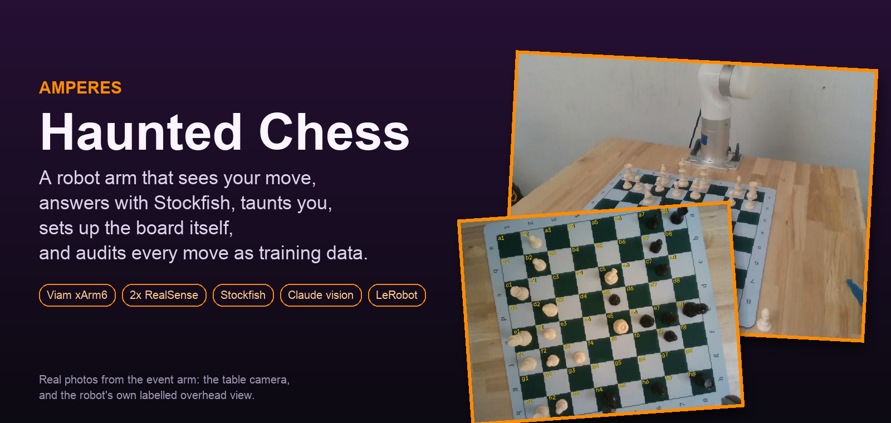
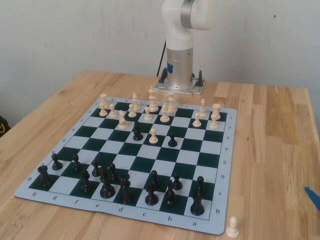
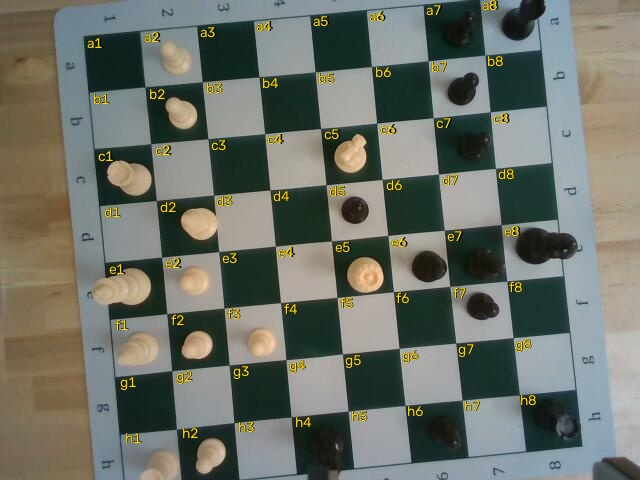

A Viam robot arm that sees your move, answers with Stockfish, taunts you in a spooky voice, sets the board up by itself, and turns every move into audited robot-learning data. Built and run on a real xArm6 at the Viam × MongoDB Robot Hackathon, October 2026.
Stockfish picks the move; the arm makes it, fast through the air and gentle in the last 6 cm.
The wrist depth camera locks the printed grid and finds the legal move you made. No typing.
A grip on air is retried at once; a move the camera didn't see is never recorded.
Six close views, every piece located and named, a planner that lifts tall pieces aside like a person.
Claude writes a taunt for every move; the voice reads it while the arm moves.
Every pick-and-place is an episode with a verdict and evidence, exported to LeRobot and MongoDB Atlas.


git clone https://github.com/vnmoorthy/amperes-haunted-chess.env (see .env.example).python -m amperes.cli serve --port 8765 and open /chess: pick Robot plays white, tick Execute, play.